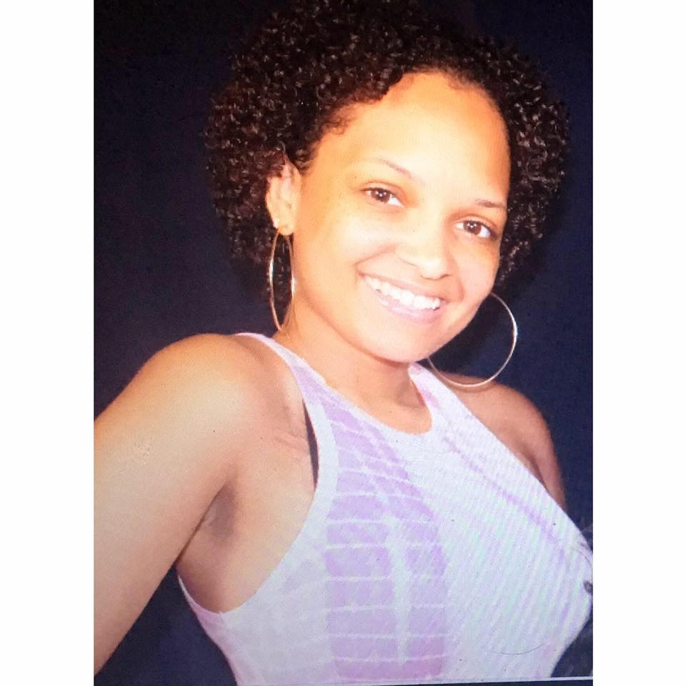

About Me

Growing up on the SouthSide of Chicago opportunities are not handed to you. I grew up knowing that if there is anything that I want I have to go after it and work hard for it. My parent's did a great job exposing me to different things, and that's how I figured out what I wanted to do with my life.
At an early age I looked to creative writing as being my escape. It got me through middle school, high school, and when it was time for me to go to college I decided Fiction Writing would be my major. After a year and a half at Columbia College I lost my love for freely writing fiction, so I dropped out. I began working in hospitality soon after, and worked my way through resturants to eventually the Hotel industry.
Still not satified with my choice of a career I decided it was time for a change. Besides fiction wiritng, coding was the only other thing I was interested in. I'm very excited to begin my journey toward being a full stack developer and can't wait to see the things that I create.
Besides writing and coding, I love to travel. So far I've been to Mexico, Puerto Rico, and Dakar, Senegal.